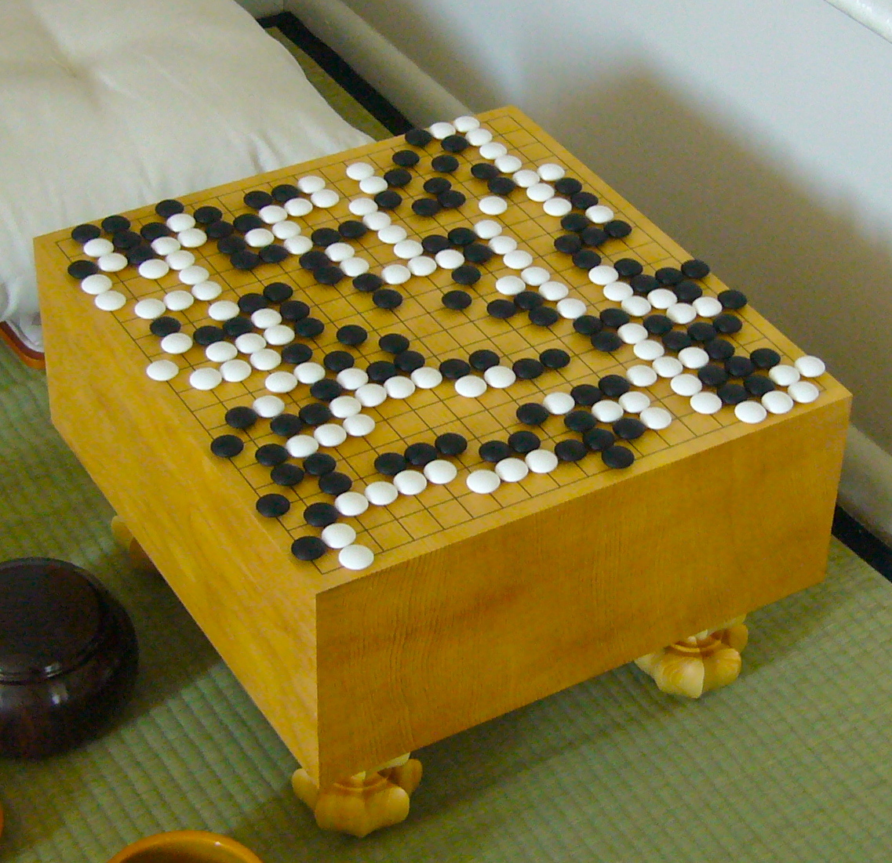
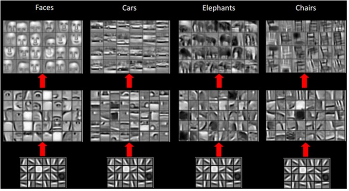

I.A.
et
jeu de go :
Comment Google a battu l'un des meilleurs joueurs de Go
Le 5 avril 2016
| ¹ | Yosakura Club de Go de Nantes, Fédération Française de Go |
| ² | Laboratoire d'Informatique de Nantes Atlantique, Université de Nantes |
Sommaire
- Le jeu de Go par Marc JEGOU
- I.A. et jeux par Florian RICHOUX
- AlphaGo par Hugo MOUGARD
- Conclusion
Le jeu de Go
Marc JEGOU
Président du Club Yosakura Nantes
Fédération Française de Go
Le jeu de Go
Aspects historiques
- Jeu né en Chine il y a 4000 ans
- Joué en Corée dès le Ve siècle
- Au Japon dès le VIIIe siècle
- Domination du Japon jusqu'aux années 80
Le jeu de Go
Aspects historiques
Le jeu de Go
Aspects historiques
Le jeu de Go
Dans le reste du monde
- 1979
- 1e championnat du monde amateur
- 1982
- International Go Federation
- 2005
- International Mind Sport Association
Le jeu de Go
En France
- 1969
- Fédération Française de Go
- 2015
- Équipe de France championne d'Europe, Fan Hui triple champion d'Europe
Le jeu de Go
En France
Le jeu de Go
En France
Le jeu de Go
Introduction

Le jeu de Go
Règles : les libertés
Le jeu de Go
Règles : les groupes
Le jeu de Go
Règles : capture

Le jeu de Go
Règles : suicide et capture
Le jeu de Go
Conséquence : vie par deux yeux
Le jeu de Go
Règles : score
◯ = 14 pierres + 23 territoires = 37 points
Avec un komi de 7.5 points, blanc gagne de 0.5 points
Intelligence Artificielle et jeux
Florian RICHOUX
Enseignant-Chercheur au LINA
Université de Nantes
I.A. et jeux
Courte histoire de l'I.A. des jeux
Facile pour une machine
I.A. et jeux
Courte histoire de l'I.A. des jeux
Les I.A. font des coups parfaits depuis 2007
I.A. et jeux
Courte histoire de l'I.A. des jeux
- Victoire d'une IA contre un champion du monde : 1997 (sur un super-calculateur)
- Aujourd'hui : des applis smart-phones battent la plupart des grand-maîtres (Stockfish)
I.A. et jeux
Courte histoire de l'I.A. des jeux
Avant AlphaGo : les I.A. battaient des pros avec un handicap moyen (3~4 pierres)
I.A. et jeux
Difficulté du Go pour une I.A.
I.A. et jeux
Difficulté du Go pour une I.A.
Raison n°1
| Morpion | ~ | $10^5$ |
| Dames | ~ | $10^{31}$ |
| Échecs | ~ | $10^{123}$ |
| Go | ~ | $10^{360}$ |
I.A. et jeux
Difficulté du Go pour une I.A.
Raison n°2
De telles heuristiques n'existent pas pour le Go !
I.A. et jeux
Pourquoi faire de la recherche en I.A. dans les jeux ?
- C'est amusant !
- De nombreux avantages par rapport à d'autres applications (robotique, …)
- Jeux = simplification du monde
I.A. et jeux
Google DeepMind et l'I.A. des jeux
AlphaGo
Hugo MOUGARD
Doctorant au LINA
Université de Nantes
AlphaGo
Demis Hassabis présente AlphaGo
Sommaire
- Fonctionnement d'une I.A. de jeu
- Introduction d'AlphaGo
- Monte Carlo Tree Search
- Réseaux de neurones à convolutions
- Fonctionnement d'AlphaGo
- Parties contre Lee Sedol : coups remarquables
AlphaGo > Fonctionnement d'une I.A. de jeu
Modèle manipulé
AlphaGo > Fonctionnement d'une I.A. de jeu
Arbre complet : utilisation

AlphaGo > Fonctionnement d'une I.A. de jeu
Algorithme min-max
AlphaGo > Fonctionnement d'une I.A. de jeu
I.A. de Go : Problèmes
- Arbre trop grand (~$10^{360}$ nœuds) → arbre complet inutilisable
- Pas d'heuristiques pour évaluer la position → Min-Max impossible
Sommaire
- Fonctionnement d'une I.A. de jeu
- Introduction d'AlphaGo
- Monte Carlo Tree Search
- Réseaux de neurones à convolutions
- Fonctionnement d'AlphaGo
- Parties contre Lee Sedol : coups remarquables
AlphaGo > Introduction d'AlphaGo
Points clefs
-
Solution au problème de taille de l'arbre de décision
→ Monte Carlo Tree Search
-
Conception d'une fonction d'évaluation
→ Réseaux de neurones à convolutions
Sommaire
- Fonctionnement d'une I.A. de jeu
- Introduction d'AlphaGo
- Monte Carlo Tree Search
- Réseaux de neurones à convolutions
- AlphaGo
- Parties contre Lee Sedol : coups remarquables
AlphaGo > Monte Carlo Tree Search
Introduction
AlphaGo > Monte Carlo Tree Search
Résultats historiques dès 2009
Mogo remporte une partie (sur trois) en 9x9 contre le champion Européen de l'époque Catalin Taranu.
AlphaGo > Monte Carlo Tree Search
Idées fondamentales
Deux points importants :
- Utiliser des simulations aléatoires comme évaluation
- Biaiser la recherche vers les coups gagnants
AlphaGo > Monte Carlo Tree Search
Simulations aléatoires
Fonctionnement :
- Jouer des coups aléatoires jusqu'à la fin de la partie
- Compter le score
- Recommencer 10 000, 100 000 fois, voire plus
AlphaGo > Monte Carlo Tree Search
Biais de la recherche
Cadre théorique des « bandits manchots » :

L'exploration des bons coups et des gains des machines à sous a des buts analogues.
AlphaGo > Monte Carlo Tree Search
Biais de la recherche
Analogie
| Monte Carlo Tree Search | Bandits Manchots | |
|---|---|---|
| But | Passer le plus de temps de calcul possible à explorer des bons coups | Gagner le plus d'argent possible avec l'argent misé |
| Exploitation | Continuer à explorer un bon coup | Continuer à miser sur une bonne machine |
| Exploration | Trouver des coups encore meilleurs | Trouver une machine qui rapporte plus |
L'exploitation et l'exploration sont des nécessités contradictoires.
AlphaGo > Monte Carlo Tree Search
Algorithme

AlphaGo > Monte Carlo Tree Search
Résultat
Avec un biais correct et beaucoup de simulations, Monte Carlo Tree Search converge vers l'arbre Min-Max.
AlphaGo > Monte Carlo Tree Search
Utilisation en Computer Go
Tous les bots majeurs utilisent MCTS. Y compris AlphaGo !
Sommaire
- Fonctionnement d'une I.A. de jeu
- Introduction d'AlphaGo
- Monte Carlo Tree Search
- Réseaux de neurones à convolutions
- Fonctionnement d'AlphaGo
- Parties contre Lee Sedol : coups remarquables
AlphaGo > Réseaux de neurones à convolutions
Ce dont ils sont capables
Excellents en reconnaissance de forme, capables de reconnaître des objets dans des images :

AlphaGo > Réseaux de neurones à convolutions
Relation au go
Les pierres forment des motifs, comme les pixels !
AlphaGo > Réseaux de neurones à convolutions
Introduction
Approximateurs de fonctions très complexes (reconnaissance d'objets). Fonctions « intuitives » en particuliers.
AlphaGo > Réseaux de neurones à convolutions
Brique de base : neurone artificiel
| Biologique | Artificiel |
|---|---|

|
Neurone artificiel : transforme ses entrées en une activation (par ex. nombre entre 0 et 1)
AlphaGo > Réseaux de neurones à convolutions
Réseaux de neurones
AlphaGo > Réseaux de neurones à convolutions
Problème 1/2
Dans un réseau classique, chaque neurone reçoit toute l'information disponible :

AlphaGo > Réseaux de neurones à convolutions
Problème 2/2
Pourtant, il est plus simple de construire la compréhension depuis des petites zones :

AlphaGo > Réseaux de neurones à convolutions
Solution 1/2
Connecter les neurones à une zone limitée de l'entrée :

AlphaGo > Réseaux de neurones à convolutions
Solution 2/2
Principe de compréhension hiérarchique par superposition de couches de neurones :

AlphaGo > Réseaux de neurones à convolutions
Filtres appris
AlphaGo > Réseaux de neurones à convolutions
Application

Sommaire
- Fonctionnement d'une I.A. de jeu
- Introduction d'AlphaGo
- Monte Carlo Tree Search
- Réseaux de neurones à convolutions
- Fonctionnement d'AlphaGo
- Parties contre Lee Sedol : coups remarquables
AlphaGo > Fonctionnement d'AlphaGo
Coeur de l'approche
Améliorer Monte Carlo Tree Search en y intégrant deux réseaux de neurones à convolutions :

AlphaGo > Fonctionnement d'AlphaGo
Policy Network
Prédire le prochain coup étant donnée une position :

AlphaGo > Fonctionnement d'AlphaGo
Value Network
Prédire le vainqueur étant donnée une position :

AlphaGo > Fonctionnement d'AlphaGo
Intégration dans MCTS
AlphaGo > Fonctionnement d'AlphaGo
Exemple de MCTS

AlphaGo > Fonctionnement d'AlphaGo
Apprentissage supervisé
AlphaGo > Fonctionnement d'AlphaGo
Apprentissage supervisé
Apprentissage depuis :
- 29M de positions tirées de 160k parties sur KGS
- 8M de positions tirées de parties sur Tygem
AlphaGo > Fonctionnement d'AlphaGo
Apprentissage par renforcement

AlphaGo > Fonctionnement d'AlphaGo
Apprentissage par renforcement
- Faire jouer le policy network contre lui même et utiliser le résultat de la partie pour biaiser les coups
- Créer de la même manière 30M de positions pour apprendre le value network
AlphaGo > Fonctionnement d'AlphaGo
Matériel
Énormes besoins matériels pour simplement faire tourner AlphaGo :
- 1900+ CPUs
- 280+ GPUs (5000€ pièce)
- 40+ search threads
Mais il en faut plus encore pour apprendre les deux réseaux !
AlphaGo > Fonctionnement d'AlphaGo
Performance
- La version 13 a battu Fan Hui 5-0
- La version 18 a battu Lee Sedol 4-1

AlphaGo > Fonctionnement d'AlphaGo
Performance
La version 18 a 1200 d'Elo en plus que la version 13
→ v18 a ~99,99% de chances de gagner contre v13 !
Sommaire
- Fonctionnement d'une I.A. de jeu
- Introduction d'AlphaGo
- Monte Carlo Tree Search
- Réseaux de neurones à convolutions
- Fonctionnement d'AlphaGo
- Parties contre Lee Sedol : coups remarquables